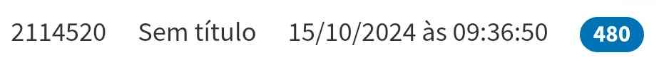

Redação
Sobre a atividade:Redação realizada durante a aula, com o tema principal de confronto virtual. Sinceramente não fui fã dessa ai.
Critérios:H12 e H8
Mamulengos
Sobre a atividade: Começada em 01 de outubro e concluída duas semanas depois, essa foi uma das atividades mais desafiadoras para o nosso grupo, principalmente pela dificuldade de entendimento. Inicialmente, acreditávamos que teríamos apenas o tempo de aula para completá-la e, por isso, não levamos o trabalho para casa, o que acabou deixando tudo muito apressado no final. A proposta era criar uma pequena história para nossos personagens, podendo ser algo simples, como uma conversa engraçada no mercado ou uma sátira sobre um tema local, desde que contasse com início, meio e fim.
Critérios: H13 e H11
Link para o Youtube
Motivação
Desde a infância, minha vida era bem comum, mas tudo mudou quando descobri a programação. Gosto de criar coisas do zero, e isso me trouxe uma motivação nova. Eu amo gatos, mas não tenho nenhum, pois sei que cuidar de um animal dá trabalho. Minha família sempre me apoiou nessa jornada. Comecei a me interessar por programação em um trabalho de jovem aprendiz em uma empresa de TI. Lá, aprendi muito sobre computadores. 1 Ano depois começei a jogar um jogo chamado Unturned, e com isso, comecei a aprender sobre desenvolvimento de plugins para o jogo, e com isso comecei a fazer comissões e ganhar dinheiro com isso, e também me fez aprender C#. Hoje, faço parte de algumas comunidades de programadores mas não faço mais comissões por falta de tempo e outros interesses. Também aprendi inglês por causa do meu amor por jogos, o que me ajudou a conhecer pessoas de várias partes do mundo. Agora, estou aprendendo Java para criar mods para Minecraft. Muitas pessoas e experiências me motivaram a seguir esse caminho, e hoje a programação é minha grande paixão.

Rap da coordenação
Atividade feita em 17 de setembro, feita com o João, com o objetivo de revisar sintaxe, período composto e coordenação, reforçando o que aprendemos em sala. A proposta era criar uma letra que mostrasse esses conteúdos, com um tema livre e feita em dupla. Escolhemos uma história inspirada em Berserk, uma obra de fantasia e superação. A ideia era capturar a essência da trama – sem focar em ódio ou vingança, mas sim em perseverança e lealdade –, algo que o autor, Kentaro Miura, sempre deixava nas entrelinhas.
Critérios: H3, H6 e H24
Link para o Canva